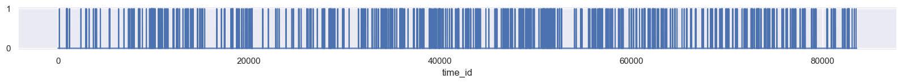
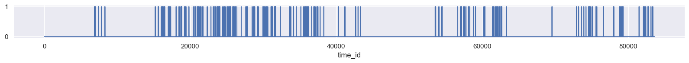
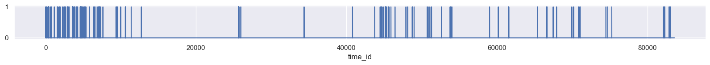
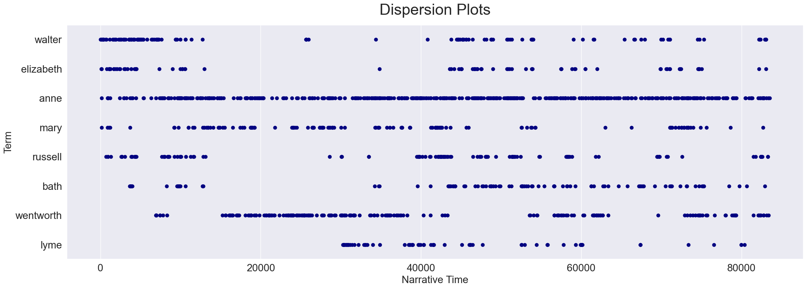
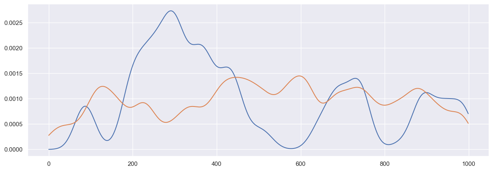
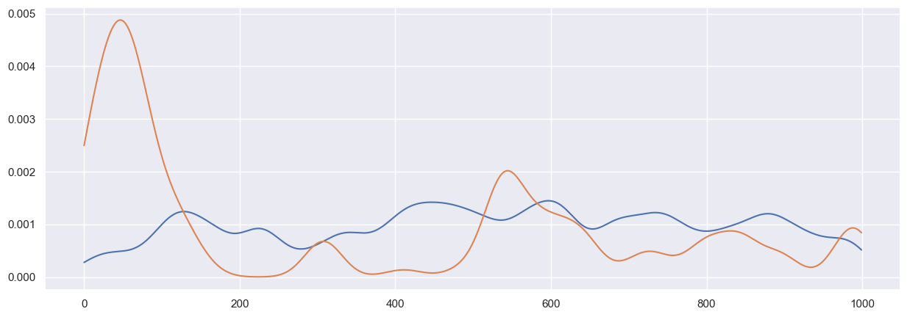
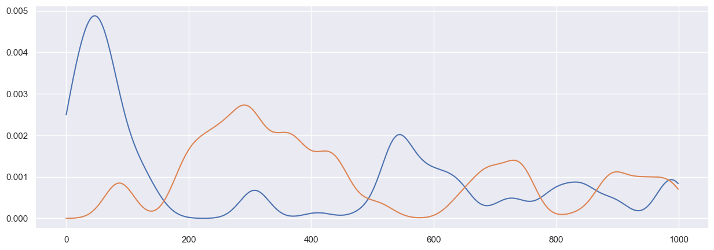
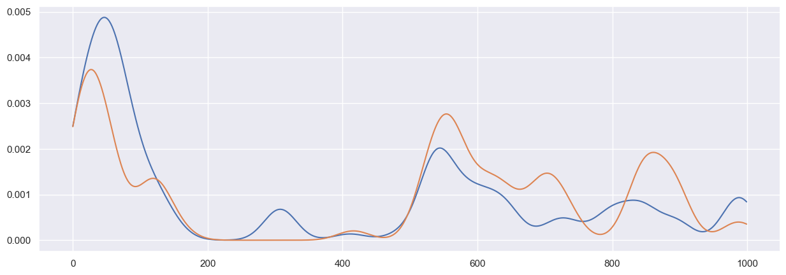

import pandas as pd
import seaborn as sns
import matplotlib.pyplot as pltTime-Token Matrices
Course: DS 5001
Module: M05 Lab
Topic: Time-Token Matrices
Author: R.C. Alvarado
Date: 12 February 2023Purpose: We demonstrate a non-BOW vector space, the TOKEN-TIME matrix.
Set Up
Import
sns.set()Config
import configparser
config = configparser.ConfigParser()
config.read("../env.ini")
data_home = config['DEFAULT']['data_home']
output_dir = config['DEFAULT']['output_dir']
data_prefix = 'austen-melville'OHCO = "book_id chap_num para_num sent_num token_num".split()
book_str = 'Persuasion'
# data_dir1 = '../../lessons/data/output'
# data_dir2 = '../../lessons/data/output'
data_prefix = 'austen-melville'Prepare the Data
Import tables
TOKEN = pd.read_csv('{}/{}-TOKEN2.csv'.format(output_dir, data_prefix)).set_index(OHCO)
# VOCAB = pd.read_csv('{}/{}-VOCAB.csv'.format(data_dir1, data_prefix)).set_index('term_str')
LIB = pd.read_csv('{}/{}-LIB.csv'.format(output_dir, data_prefix)).set_index('book_id')TOKEN.head()| pos_tuple | pos | token_str | term_str | |||||
|---|---|---|---|---|---|---|---|---|
| book_id | chap_num | para_num | sent_num | token_num | ||||
| 158 | 1 | 1 | 0 | 0 | ('Emma', 'NNP') | NNP | Emma | emma |
| 1 | ('Woodhouse,', 'NNP') | NNP | Woodhouse, | woodhouse | ||||
| 2 | ('handsome,', 'NN') | NN | handsome, | handsome | ||||
| 3 | ('clever,', 'NN') | NN | clever, | clever | ||||
| 4 | ('and', 'CC') | CC | and | and |
Select a book
my_book_id = LIB[LIB.title.str.match(book_str.upper())].index[0]my_book_id105BOOK = TOKEN.loc[my_book_id].copy()BOOK.head()| pos_tuple | pos | token_str | term_str | ||||
|---|---|---|---|---|---|---|---|
| chap_num | para_num | sent_num | token_num | ||||
| 1 | 1 | 0 | 0 | ('Sir', 'NNP') | NNP | Sir | sir |
| 1 | ('Walter', 'NNP') | NNP | Walter | walter | |||
| 2 | ('Elliot,', 'NNP') | NNP | Elliot, | elliot | |||
| 3 | ('of', 'IN') | IN | of | of | |||
| 4 | ('Kellynch', 'NNP') | NNP | Kellynch | kellynch |
Create Token-Time Matrix
We use df.get_dummies().
TTM = pd.get_dummies(BOOK['term_str'], columns=['term_str'], prefix='', prefix_sep='', drop_first=True)\
.reset_index(drop=True).iloc[:,1:]
TTM.index.name = 'time_id'TTM = TTM.astype('int')TTM.sum().sort_values(ascending=False)the 3329
to 2808
and 2800
of 2570
a 1594
...
incurious 1
incurred 1
indebted 1
indecision 1
zealously 1
Length: 5797, dtype: int64Visualize Dispersion Plots of Words
cfg = {'figsize': (20,1)}TTM['anne'].plot(**cfg);
TTM['wentworth'].plot(**cfg);
TTM['walter'].plot(**cfg);
Do Better with Seaborn Strip Plots
B = BOOK['term_str'].reset_index(drop=True).to_frame().reset_index().rename(columns={'index':'offset'})B.head()| offset | term_str | |
|---|---|---|
| 0 | 0 | sir |
| 1 | 1 | walter |
| 2 | 2 | elliot |
| 3 | 3 | of |
| 4 | 4 | kellynch |
def plot_words(words, book):
X = book[book.term_str.isin(words)]
plt.figure(figsize=(22, len(words)))
ax = sns.stripplot(y='term_str', x='offset', data=X, orient='h', marker=".", color='navy', size=15, jitter=0)
ax.set_title('Dispersion Plots', size=30, pad=20)
ax.set_xlabel('Narrative Time', size=20)
ax.set_ylabel('Term', size=20)
plt.xticks(rotation=0, fontsize=20)
plt.yticks(rotation=0, fontsize=20)
plt.tight_layout()
plt.show()names = 'walter elizabeth russell anne wentworth mary lyme bath'.split()plot_words(names, B)/Users/rca2t1/anaconda3/lib/python3.11/site-packages/seaborn/_oldcore.py:1498: FutureWarning: is_categorical_dtype is deprecated and will be removed in a future version. Use isinstance(dtype, CategoricalDtype) instead
if pd.api.types.is_categorical_dtype(vector):
/Users/rca2t1/anaconda3/lib/python3.11/site-packages/seaborn/_oldcore.py:1498: FutureWarning: is_categorical_dtype is deprecated and will be removed in a future version. Use isinstance(dtype, CategoricalDtype) instead
if pd.api.types.is_categorical_dtype(vector):
/Users/rca2t1/anaconda3/lib/python3.11/site-packages/seaborn/_oldcore.py:1498: FutureWarning: is_categorical_dtype is deprecated and will be removed in a future version. Use isinstance(dtype, CategoricalDtype) instead
if pd.api.types.is_categorical_dtype(vector):
/Users/rca2t1/anaconda3/lib/python3.11/site-packages/seaborn/_oldcore.py:1498: FutureWarning: is_categorical_dtype is deprecated and will be removed in a future version. Use isinstance(dtype, CategoricalDtype) instead
if pd.api.types.is_categorical_dtype(vector):
/Users/rca2t1/anaconda3/lib/python3.11/site-packages/seaborn/_oldcore.py:1498: FutureWarning: is_categorical_dtype is deprecated and will be removed in a future version. Use isinstance(dtype, CategoricalDtype) instead
if pd.api.types.is_categorical_dtype(vector):
/Users/rca2t1/anaconda3/lib/python3.11/site-packages/seaborn/_oldcore.py:1498: FutureWarning: is_categorical_dtype is deprecated and will be removed in a future version. Use isinstance(dtype, CategoricalDtype) instead
if pd.api.types.is_categorical_dtype(vector):
/Users/rca2t1/anaconda3/lib/python3.11/site-packages/seaborn/_oldcore.py:1498: FutureWarning: is_categorical_dtype is deprecated and will be removed in a future version. Use isinstance(dtype, CategoricalDtype) instead
if pd.api.types.is_categorical_dtype(vector):
/Users/rca2t1/anaconda3/lib/python3.11/site-packages/seaborn/_oldcore.py:1119: FutureWarning: use_inf_as_na option is deprecated and will be removed in a future version. Convert inf values to NaN before operating instead.
with pd.option_context('mode.use_inf_as_na', True):
/Users/rca2t1/anaconda3/lib/python3.11/site-packages/seaborn/_oldcore.py:1119: FutureWarning: use_inf_as_na option is deprecated and will be removed in a future version. Convert inf values to NaN before operating instead.
with pd.option_context('mode.use_inf_as_na', True):
Use KDE
KDE works by positing that each instance of a token represents a small gaussian distribution before and after the word. When words appear in bunches, their curves add up, producing an aggregate curve over narrative time.
kde_kernel = 'gaussian'
kde_bandwidth = 2000
kde_samples = 1000import numpy as np
import scipy as sp
from sklearn.neighbors import KernelDensity as KDE
from nltk.corpus import stopwordsCreate arrays of offsets for each term
X = B.reset_index().groupby(['term_str']).offset.apply(lambda x: x.tolist()).to_frame()X['x'] = X.apply(lambda x: np.array(x.offset)[:, np.newaxis], 1)X.head()| offset | x | |
|---|---|---|
| term_str | ||
| 1 | [121, 153] | [[121], [153]] |
| 15 | [125] | [[125]] |
| 16 | [209] | [[209]] |
| 1760 | [122] | [[122]] |
| 1784 | [126] | [[126]] |
Get KDE for each term
scale_max = B.offset.max() # THIS IS CRUCIAL
x_axis = np.linspace(0, scale_max, kde_samples)[:, np.newaxis]
X['kde'] = X.apply(lambda row: KDE(kernel=kde_kernel, bandwidth=kde_bandwidth).fit(row.x), 1)
X['scores'] = X.apply(lambda row: row.kde.score_samples(x_axis), axis=1)
# B['scaled'] = B.apply(lambda row: np.exp(row.scores) * (scale_max / kde_samples), axis=1)Visualize KDE plots
PLOTS = X.apply(lambda row: pd.Series(np.exp(row.scores) * (scale_max / kde_samples)), axis=1)FIG = dict(figsize=(15, 5))PLOTS.loc['wentworth'].plot(**FIG);
PLOTS.loc['anne'].plot(**FIG);
PLOTS.loc['anne'].plot(**FIG);
PLOTS.loc['walter'].plot(**FIG);
PLOTS.loc['walter'].plot(**FIG);
PLOTS.loc['wentworth'].plot(**FIG);
PLOTS.loc['walter'].plot(**FIG);
PLOTS.loc['elizabeth'].plot(**FIG);
Question
We can treat each word as a vector of narrative time. What can we learn by correlated words in this space?
For a clue, see this essay by David McClure.